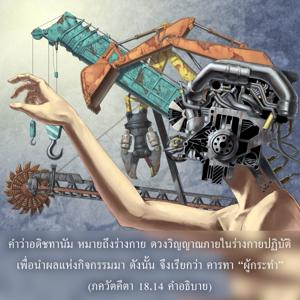
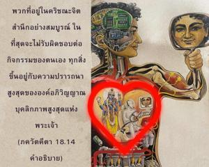

สถานที่แห่งกิจกรรม (ร่างกาย) ผู้กระทำ ประสาทสัมผัสต่างๆ ความพยายามอันมากมาย และในที่สุดองค์อภิวิญญาณ สิ่งเหล่านี้คือปัจจัยทั้งห้าของกิจกรรม


คำว่า อธิษฺฐานมฺ หมายถึงร่างกาย ดวงวิญญาณภายในร่างกายปฏิบัติเพื่อนำผลแห่งกิจกรรมมาดังนั้นจึงเรียกว่า กรฺตา “ผู้กระทำ” ดวงวิญญาณเป็นผู้รู้และผู้กระทำได้กล่าวไว้ใน ศฺรุติ ว่า เอษ หิ ทฺรษฺฏา สฺรษฺฏา ( ปฺรศฺน อุปนิษทฺ 4.9) ได้ยืนยันไว้ใน เวทานฺต-สูตฺร เช่นกัน ด้วยโศลก ชฺโญ ’ต เอว (2.3.18) และ กรฺตา ศาสฺตฺรารฺถวตฺตฺวาตฺ (2.3.33) เครื่องมือของกิจกรรมคือประสาทสัมผัสต่างๆ และจากประสาทสัมผัสดวงวิญญาณปฏิบัติในวิธีต่างๆนานาแต่ละกิจกรรมมีความพยายามที่แตกต่างกัน แต่กิจกรรมทั้งหมดขึ้นอยู่กับความปรารถนาขององค์อภิวิญญาณผู้ทรงประทับอยู่ภายในหัวใจในฐานะที่เป็นสหาย องค์ภควานฺทรงเป็นสาเหตุสูงสุดภายใต้สถานการณ์เหล่านี้ ผู้ปฏิบัติในกฺฤษฺณจิตสำนึกภายใต้การชี้นำขององค์อภิวิญญาณผู้ทรงสถิตภายในหัวใจโดยธรรมชาติจะไม่ถูกพันธนาการด้วยกิจกรรมใดๆ พวกที่อยู่ในกฺฤษฺณจิตสำนึกอย่างสมบูรณ์ในที่สุดจะไม่รับผิดชอบต่อกิจกรรมของตนเอง ทุกสิ่งขึ้นอยู่กับความปรารถนาสูงสุดขององค์อภิวิญญาณบุคลิกภาพสูงสุดแห่งพระเจ้า